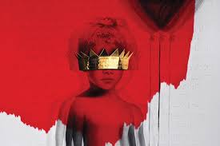

"Anti" Rihanna
After releasing "Anti" Rihanna jumped ahead of the aritsts I admire in my head and made top 5. This album is not only catchy, but it is insipring and powerful in all the right ways. It will make you dance, cry and sing on the top of your lungs (not as good as Rihanna does it though). I found myself playing this album on repeat everyday and the reason for this is simple: it is just plain and simple good. The lyrics and vocals match the instruments to perfection and deliver a clear message of musical power and genius. The use of adding different kinds of language that is native to her, is interesting and educating all at once. The titles of the songs are also striking and stay true to the message she is delivering. I am a big fan of Rihanna for her music and style, and I believe this album is her most authentic.
